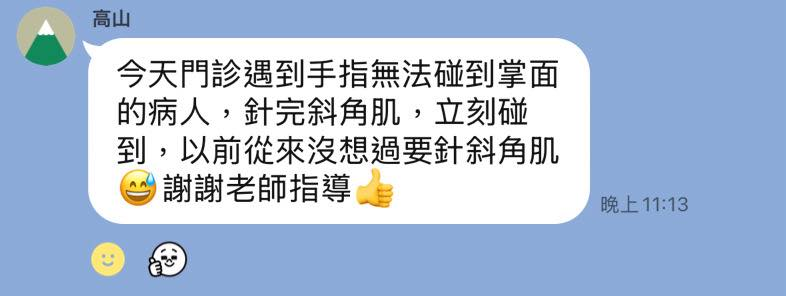
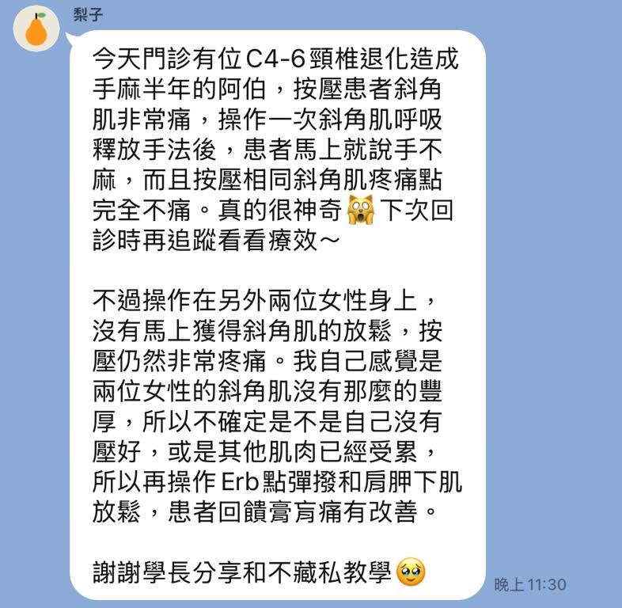

現學現用尚青啦！
現學現用尚青啦！
身為台上講者，看到這些回饋真的是會非常開心又感動🥹🥹🥹
基於解剖學、肌動學與生物力學的角度，切入診間常見問題，盡可能地拆解背後原理、簡化操作方式，讓學員們能夠聽懂、做到、學會，課後直接在診間回饋給患者是最直接的直球對決，也是給學習者或操作者一個最強力的強心針！
「原來，我也可以做得到！」
這就是我希望帶給學員們最直接的震撼，用雙手/針也能處理看似很難的問題，世界上本來就沒有一招一式或一個學門能完全處理全部的問題，但站在踏實的人體結構上，我們能很清楚地知道自己在幹嘛、做了什麼改變以及對患者造成了什麼影響。
踏實、清楚的一招一式，才是練就一身技藝的根本！工作坊的目的在拋磚引玉，希望能回歸根本，重新審視所學，踏實走穩每一步。
人體的解剖、肌動學及生物力學，就是最適合針傷徒手醫師們必修的呼吸法！
太初·初心苑
中醫師 黃彥鈞
#表面解剖觸診與徒手入門工作坊
#梨子同學人家阿伯手麻半年你兩個呼吸給人家搞定會不會太過份🤣🤣🤣🤣🤣

